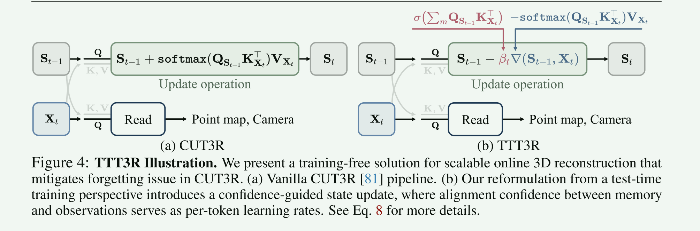
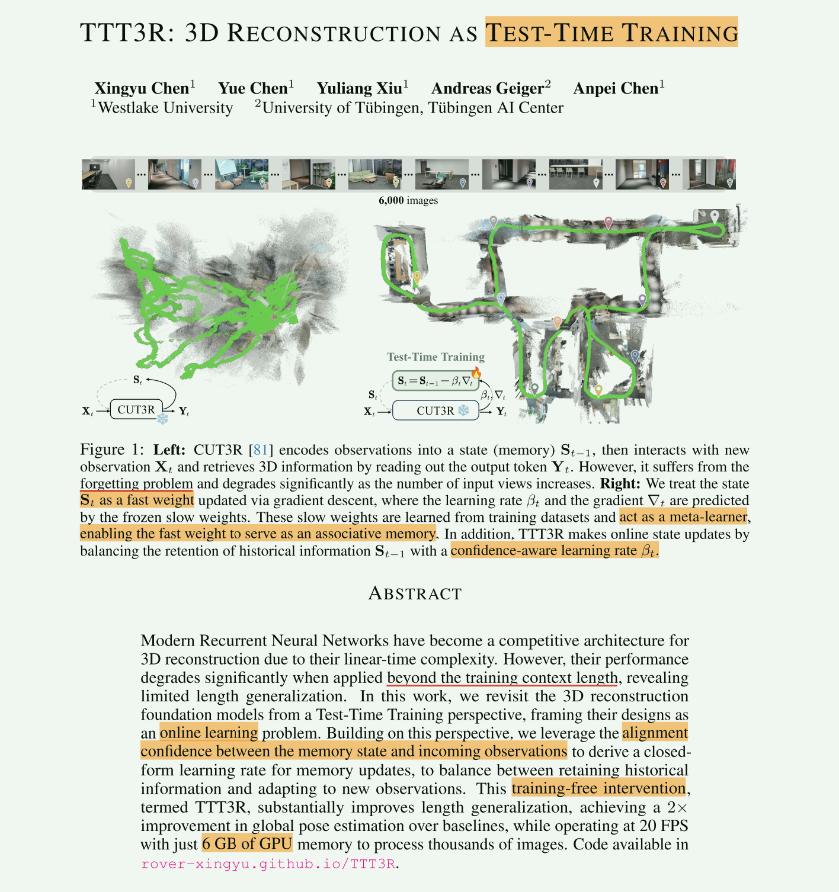
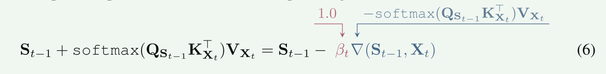
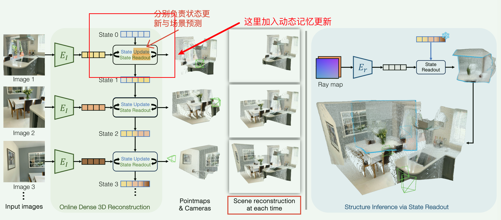
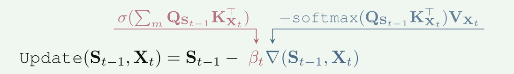
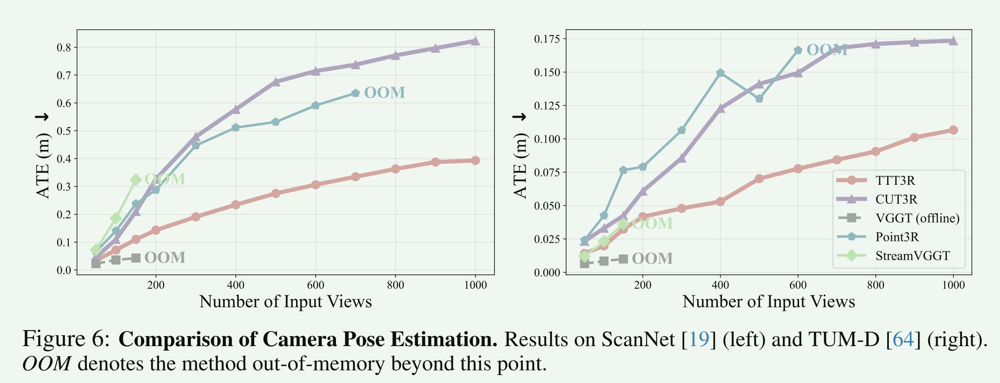
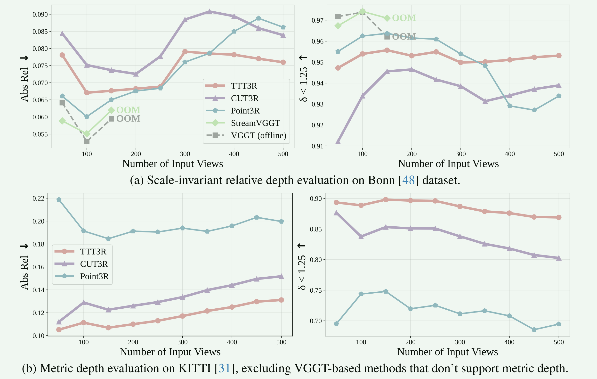

• Problem：CUT3R 这种在线的流式重建在长序列推理时会发生状态遗忘与尺度漂移，导致几何退化与轨迹漂移。
• Method：把循环状态的维护视作 “Test-time Training” ，通过对齐置信来更新一个闭式的学习率，前向就可以自适应更新记忆。
• Contributions：不用其他反传与优化，仅对齐置信 -> 状态更新 就能适应更长序列。
Pipeline


1. Introduction
现在的流式 / 在线的前馈重建，需要逐帧接收 & 实时更新场景，在序列过长之后就会出现：
state forgetting：循环结构只能访问有限历史，长序列中旧信息被新帧覆盖；
尺度与姿态漂移（drift）：累积误差无法反向修正；
out-of-context generalization：训练时仅见短序列，推理时长视频分布不同。
TTT3R ：把 state 看成测试过程中能更新的“fast weights”，把每一次的前向更新视作 Test-Time Training。

DUSt3R、VGGT：全局注意力处理多视角， O(N²)；
Fast3R、MASt3R：折中速度与可扩展性，仍需全局上下文；
CUT3R：“持续状态”（persistent state），跨帧 cross-attention 维护场景记忆，在线 3D 感知。但==状态只更新不回看，长期漂移明显；
Point3R、StreamVGGT：用显式缓存或短窗滑动解决长序列误差累积，复杂度++；
Test-Time Training：常用于语义和分类，TTT3R把这个想法引到重建中：状态 S ≈ 模型在测试期可学习的“fast weights”，能在前向闭式更新。
2. Method
整体继承于 CUT3R，It → ViT → State → pointmap &cameras → online reconstruction

CUT3R的更新：全覆盖式更新
TTT3R的更新：高置信强更新；反之仅轻微调整，避免错误写入。

3. Experiments


4. Conclusion & Limitations
一句话：online 3DR → test-time training，在推理中实现前向可学习状态更新。
不改变结构，不增加复杂度，但显著提升长序列的稳定性与尺度一致性。
- 只是减轻但不是解决了长序列遗忘问题；
- 精度和离线的模型（VGGT）相比还是差很多；
- Test-Time Training 仍可探索。